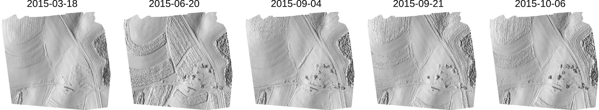

Data simulation
Helena Mitasova, Anna Petrasova, Vaclav Petras
Learning objectives
- when we need data simulation
- selected computational techniques for data simulation (geostatistics, fractals, monte carlo...)
- generating scenarios
- generating data from physical models: SfM approach
Motivation for simulating data
- uncertainty analysis: simulating errors
- sensitivity analysis: generating model parameters
- scenario modeling
- testing algorithms
- add yours
Properties of simulated data
random, spatially correlated, statistical properties (distribution)
- no spatial dependence, spatially correlated (distance dependent)
- gaussian distribution, ...
- fractal
Types of simulated data
Geometry, spatial correlation?, statistical properties (distribution)
- points, lines areas, surfaces
- no spatial dependence, spatially correlated (distance dependent)
- gaussian distribution, ...
- processing, analysis and visualization
Methods for generating data with given properties
Examples of approaches
Geometry based spatial methods
Examples of approaches
- mathematical functions (plane, paraboloid, etc.)
- growth
- distribution based on configuration space
Monte Carlo and its applications
Examples of approaches
- Monte Carlo
- classification, feature extraction, change detection and quantification
- statistical modeling to relate the observed data to the studied process dynamics
Examples: fractals
Bi-variate interpolation of DEMs from point clouds to surfaces and dynamic visualization

Jockey's Ridge 1974 - 2017: southward migration, landform transformation
Examples: random points, perturbance
Satellite imagery (3m res), September 2017 - July 2018
Planet: world’s largest constellation of Earth-imaging (micro) satellites providing daily observations
for entire Earth at 3m resolution
Examples: patch generators
groundwater pollution over 10 years - data

Generating complex distributions with given properties
- points with spatial interactions - inputs for ABM
- patches with spatial dependence and geometry properties

Observation multitemporal data
Additional examples
- monthly precipitation over Amazon basin (precipitation as a surface)
- Cape Fear and Cape hatteras (terrain over time)
- Subsurface soil moisture (4D)
Managing multitemporal data
Temporal data framework
- supports efficient processing, management and analysis of space-time data sets
- space-time dataset is a set of maps (raster, vector) registered in a temporal database
- space-time dataset may represent a dynamic process
- individual maps represent the states of the dynamic system at a given time
Gebbert, S. and Pebesma, E. (2014).
A temporal GIS for field based environmental modeling.
Environmental Modelling and Software, 53, 1–12.
Time stamp type
- time stamp: assigns time to an individual map in space-time data set
- time instant - snapshot at given time: 2013-10-15 13:00:00 (absolute time)
- time interval - defined by start and end time: day, month, year (relative time)
- example: a single UAS survey represents a snapshot (state) which can be agreggated into intervals

Registered space-time dataset
Timeline tool: time and spatial extent of registered maps

Temporal plot
- Plot time series of measured values at a given location: April through October
Temporal count and intersection
- Count: number of maps (temporal snapshots) where the given cell has non-null value (overlap)
- Intersection: grid cells with non-null values from each map in time series


Temporal aggregation
- Temporally aggregate maps over given period of time - for example to derive monthly average elevation

Basic time series analysis
Per cell statistics computed for each cell over time:
- mean and standard deviation
- min, max elevation and range
- time at minimum, time at maximum
- linear regression: slopem offset, regr. coefficient
UPDATE
Mitasova, H., Hardin, E., Overton, M., and Harmon, R.S., 2009, New spatial measures of terrain dynamics derived from time series of lidar data, Proc. 17th Int. Conf. Geoinformatics, Fairfax, VA.
Detecting distortions in surveys
- Derive core (minimum) surface from UAS time series
- Compute difference between UAS core and lidar bare ground surface
- Compute time of minimum raster: identify distorted DSMs with elevation below lidar bare ground
Corrected UAS core surface
- Remove distorted DSMs from derivation of core surface
- Difference between UAS core and lidar bare ground surface is now very small
- Hist. equalized color ramp for differences highlights a small shift in lidar swath
Envelope and range applications
- Envelope: what is the max height of crop in each pixel over the monitored period?
- time of maximum - when was the crop highest at each grid cell?
- where is the largest range and variability in crop height?
Envelope and range applications
- use envelope to show all cars ever parked at the site
- core, snapshot, envelope, surfaces can be used to manage parking area
Basic time series analysis: regression
- applies to well designed, systematic monitoring with longer time series,
- select subset where the changes are close to linear - e.g. crop growth period,
- compute per cell linear regression analysis: map of regression slope and offset
Map algebra for time series
- apply map algebra expression for each map in the time series at each grid cell
- output is new time series which is registered as a new space-time dataset
- this is different (and much simpler) from temporal map algebra
Extract crop height time series
Map algebra can be used to
extract grid cells with elevation above lidar bare ground
within a selected elevation interval (z1,z2)
Maps of relative elevation (0.3m, 2.0m) above bare ground lidar for 3 time snapshots in our time series.
The middle map shows distortions rather than crop.
Dynamic processes
fundamental physical, biological and socio-economic processes
Dynamic processes
Dynamic processes in your projects
- development growth
- population / development migration
- algae growth /evolution
- crop growth / die out
Static and dynamic simulations
- steady state for dynamic processes
- dynamic simulations
Dynamic simulations
Results have a well defined time step
- Modeling processes: solar radiation
- flooding
- surface water flow
- sediment transport
- erosion and deposition, landscape evolution

Simulation output: time series
Same handling with temporal framework